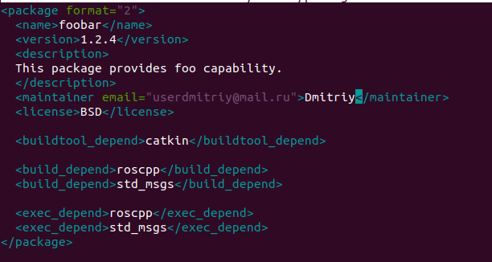
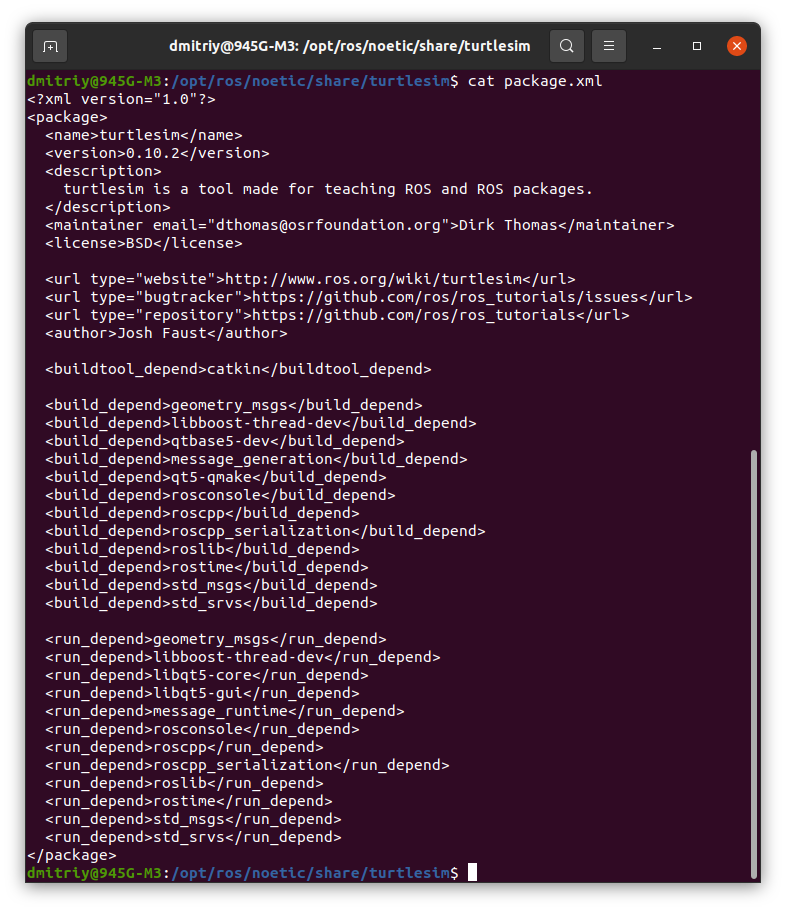
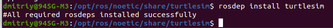

Существует инструмент для создания ROS-пакетов (catkin_create_pkg), но, как вы увидите, на самом деле здесь нет ничего сложного. catkin_create_pkg предотвращает ошибки и экономит усилия, но пакеты - это всего лишь каталог и простой XML-файл.
Теперь мы создадим новый пакет foobar. В этом руководстве предполагается, что мы работаем с вашим рабочим пространством catkin и что поиск установочного файла уже выполнен.
В каталоге catkin_ws:
mkdir -p src/foobar
cd src/foobar
В данный момент src/foobar пустой. Самое первое, что мы сделаем, это добавим наш файл манифеста. Файл package.xml позволяет таким инструментам, как rospack, определять информацию о том, от чего зависит ваш пакет.
nano src/foobar/package.xml
Внутри foobar/package.xml поместите следующее:

Теперь, когда у вашего пакета есть манифест, ROS может найти его. Попробуйте выполнить команду:
rospack find foobar
Если все верно, то выдаст путь к пакету.
Обратите внимание, что этот пакет теперь также имеет зависимости от roscpp и std_msgs. Такие зависимости используются catkin для настройки пакетов в правильном порядке.
Теперь нам нужен файл CMakeLists.txt, чтобы catkin_make, который использует CMake для большей гибкости при сборке на нескольких платформах, собрал пакет.
В данный момент его нет. Создадим и редактируем в моём любимом редакторе из каталога catkin_ws:
nano src/foobar/CMakeLists.txt
cmake_minimum_required(VERSION 2.8.3) project(foobar) find_package(catkin REQUIRED roscpp std_msgs) catkin_package()
Это все, что вам нужно, чтобы начать создавать пакет в ROS с помощью catkin. Конечно, если вы хотите, чтобы он действительно начал что-то создавать, вам нужно будет изучить еще пару макросов CMake. Дополнительную информацию смотрите в нашем руководстве CMakeLists.txt. Также всегда возвращайтесь к руководству для начинающих (создание пакета и т.д.), чтобы настроить свои package.xml и CMakeLists.txt.
Пакетам ROS иногда требуются внешние библиотеки и инструменты, которые должны предоставляться операционной системой. Эти необходимые библиотеки и инструменты обычно называются системными зависимостями. В некоторых случаях эти системные зависимости не устанавливаются по умолчанию. ROS предоставляет простой инструмент rosdep, который используется для загрузки и установки системных зависимостей.
Пакеты ROS должны указывать, что им нужны эти системные зависимости, в манифесте пакета. Давайте посмотрим на манифест для пакета turtlesim:
Сначало:
roscd turtlesim
cat package.xml

Внутри тегов build_depend можно видеть требуемые библиотеки пакеты для ноды (пакета) turtlesim.
rosdep - это инструмент, который вы можете использовать для установки системных зависимостей, требуемых пакетами ROS.
Общий синтаксис:
rosdep install [package]
Загрузим и установим системные зависимости для turtlesim:
rosdep install turtlesim

Хотя rosdep является клиентским инструментом, ссылка предоставляется правилами rosdep, которые хранятся онлайн в ros/rosdistro/rosdep на github.
Когда выполняем:
rosdep update
rosdep фактически извлекает правила из репозитория rosdistro на github.
начиная с версии 0.14.0, обновление rosdep будет извлекать имена пакетов ROS только для дистрибутивов ROS, отличных от EOL. Если вы все еще используете дистрибутив EOL ROS (чего, вероятно, не следует делать), вы можете передать аргумент --include-eol-distros, чтобы также получить имена этих пакетов ROS.
Эти правила используются, когда в списке указана зависимость, которая не соответствует имени пакета ROS, созданного в buildfarm. Затем rosdep проверяет, существует ли правило для ее устранения для соответствующей платформы и используемого менеджера пакетов.
При создании нового пакета вам может потребоваться объявить новые системные зависимости в соответствии с правилами rosdep, если их там еще нет. Просто отредактируйте файл, добавьте необходимую зависимость (строго в алфавитном порядке и по структуре, аналогичной другим уже зарегистрированным зависимостям) и отправьте запрос на извлечение.
После того, как этот запрос на извлечение был объединен, вам нужно запустить :
rosdep update
и теперь эта зависимость будет устранена rosdep.
Можно протестировать это:
rosdep resolve my_dependency_name